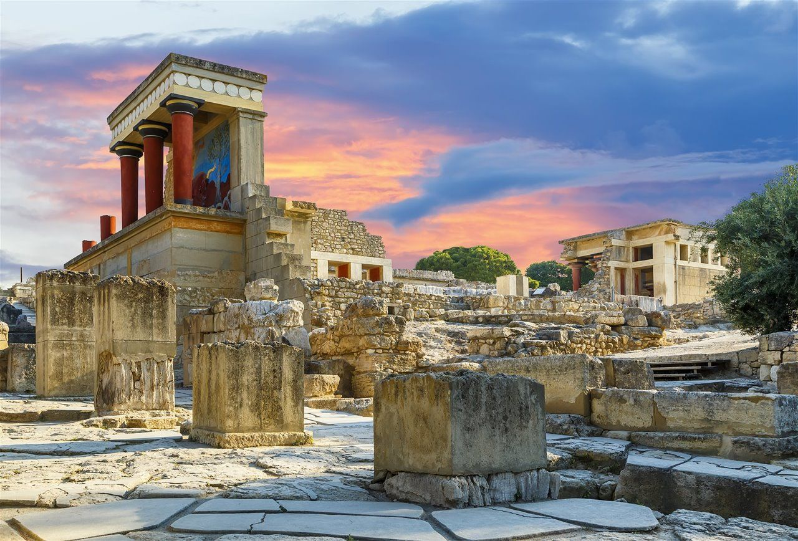
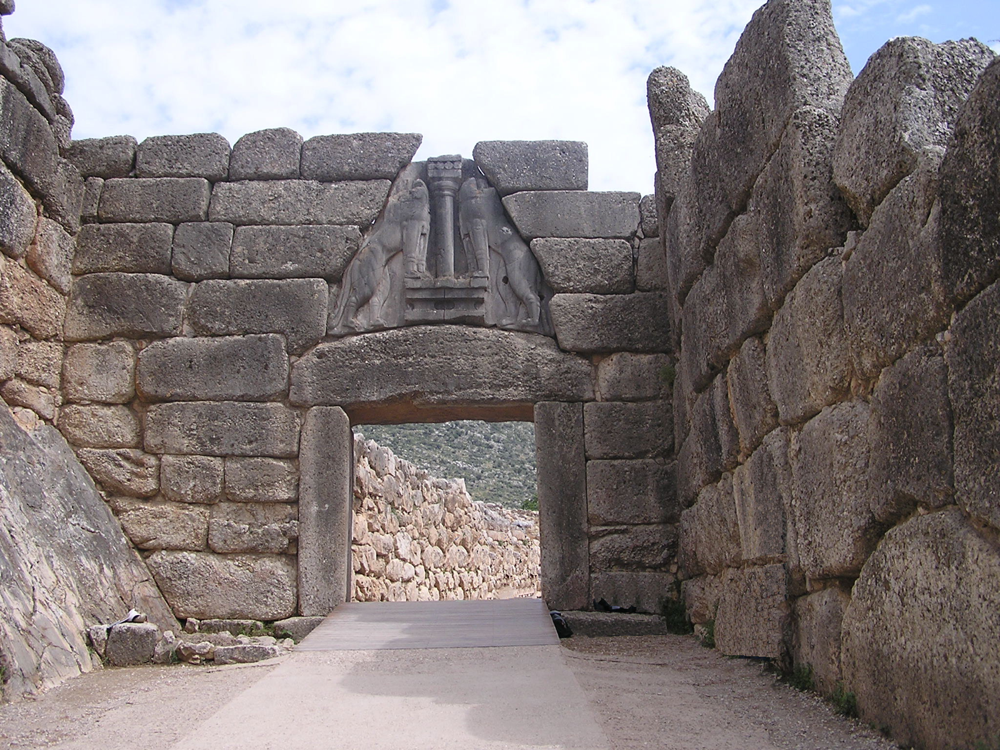
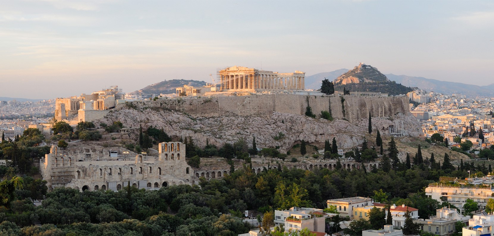

Teoría UD2 · Historia: de Grecia a Roma¶
Obxectivos da unidade
- Comprender as etapas fundamentais da historia grega (minoica/micénica, arcaica, clásica e helenística).
- Identificar as fases da historia romana (monarquía, república e imperio) e os seus fitos esenciais.
- Situar nunha liña do tempo dez acontecementos clave.
- Explicar a influencia da cultura grega sobre Roma e a construción dun espazo mediterráneo común.
1. Grecia¶
A civilización grega desenvolveuse nun espazo fragmentado en pequenas polis (cidades-estado). Cada polis tiña o seu territorio, as súas institucións e a súa divindade protectora. Grecia non foi nunca un Estado unificado, senón unha constelación de comunidades independentes. A expansión polo Mediterráneo mediante a colonización (séculos VIII–VI a.n.e.) permitiu estender a cultura grega a moitas rexións, desde Asia Menor ata a Magna Grecia en Italia.
A cultura grega marcou para sempre a política, a arte e o pensamento de Europa.
1.1 Etapas históricas (visión xeral)¶
A historia grega pódese dividir en seis grandes períodos.
Mapa interactivo · Polis e colonización (placeholder)
1.2 Do mundo palacial á polis¶
 
- Civilización minoica (Creta):
- Desenvolveuse na illa de Creta entre os anos 2000–1400 a.n.e.
- Organizábase arredor de grandes palacios (Cnosos, Festos, Malia), que eran á vez centros políticos, económicos e relixiosos.
- Destacan os frescos policromos con escenas naturais e mariñas, que mostran unha sociedade refinada e aberta ao mar.
- Utilizaban a escritura lineal A, aínda non descifrada.
- A súa economía baseábase no comercio marítimo, polo que Creta converteuse nunha potencia naval do Exeo.
- Relixión de carácter naturalista e feminino: cultos á deusa nai, ao touro (mito do Minotauro).

- Cultura micénica (continente):
- Desenvolveuse no continente grego (1600–1100 a.n.e.), en cidades como Micenas, Tirinto ou Pilos.
- Tiña unha sociedade xerárquica e guerreira, dirixida por reis (wanax) apoiados por unha aristocracia militar.
- Construíron cidadelas fortificadas e tumbas monumentais (tholos, como a “tumba de Atreo”).
- Desenvolveron unha escritura propia, o lineal B, que xa foi descifrada e que representa unha forma arcaica do grego.
- A súa cultura militar reflíctese nos poemas homéricos (Ilíada, Odisea), que transmiten ecos dun pasado heroico.

- Tras a Idade Escura (1100–800 a.n.e.):
- Con as invasións dóricas e a caída do mundo micénico produciuse un retroceso demográfico, económico e cultural: desapareceu a escritura, reduciuse o comercio e as aldeas quedaron illadas.
- A partir do século VIII a.n.e. houbo unha recuperación:
- Reaparece a escritura mediante a adaptación do alfabeto fenicio, que deu lugar ao grego.
- Fórmanse as polis, comunidades políticas independentes cun núcleo urbano e un territorio agrícola arredor.
- Nace un novo sistema social baseado na cidadanía, na participación política (aínda limitada a homes libres) e no concepto de comunidade.
Institucións e sociedade
-
A polis:
- Era a comunidade política fundamental en Grecia.
- Combinaba un espazo urbano (asty) cun espazo rural (chora).
- Os cidadáns homes libres participaban na asemblea e elixían ou ocupaban as maxistraturas.
- Había tamén non-cidadáns: mulleres, metecos (estranxeiros residentes) e escravos.
-
Economía:
- Agricultura da tríade mediterránea (trigo, vide, oliveira).
- Artesanía especializada (cerámica, metalurxia, tecidos).
- Comercio marítimo, facilitado pola xeografía grega de illas e costas recortadas.
-
Colonización (s. VIII–VI a.n.e.):
- As polis, ante o aumento de poboación e a escaseza de terras, fundaron novas cidades ao longo do Mediterráneo e Mar Negro.
- Creáronse polis na costa de Asia Menor, no sur de Italia e Sicilia (Magna Grecia), en Galia, Exipto ou Cirene (Libia).
- A colonización permitiu difundir a lingua, a relixión e as formas políticas gregas, creando un espazo cultural común.
Vídeo: A polis grega en 5' (placeholder)
1.3 O período clásico: Atenas, Esparta e as guerras¶

O chamado período clásico (séculos V–IV a.n.e.) é a etapa de maior esplendor da civilización grega e o momento en que se consolidan moitas das bases políticas, artísticas e intelectuais que influíron na cultura europea posterior.
As Guerras Médicas (490–479 a.n.e.)¶
Durante o século V a.n.e., o Imperio Persa intentou someter as polis gregas. A resistencia foi liderada principalmente por Atenas e Esparta:
- En Maratón (490 a.n.e.), os atenienses derrotaron sorprendentemente ao exército persa.
- En Termópilas (480 a.n.e.), un pequeno grupo de espartanos, encabezados polo rei Leónidas, resistiu heroicamente fronte a un inimigo inmensamente superior.
- En Salamina (480 a.n.e.), a frota ateniense obtivo unha vitoria naval decisiva.
Estas batallas convertéronse en símbolos da identidade grega e da defensa da liberdade fronte á tiranía.
O esplendor de Atenas¶
Logo das Guerras Médicas, Atenas asumiu a hexemonía mediante a Liga de Delos, unha alianza militar que se converteu nun auténtico imperio mariñeiro.
Baixo o liderado de Pericles (mediados do século V a.n.e.):
- Consolidouse a democracia ateniense, cunha participación cidadá directa nas asembleas.
- Viviu un gran esplendor cultural, con autores como Esquilo, Sófocles e Eurípides no teatro, Heródoto e Tucídides na historiografía, Sócrates na filosofía.
- A Acrópole foi monumentalizada con edificios como o Partenón, símbolo da arte clásica e da confianza no ser humano.
Atenas converteuse así no faro cultural de Grecia, aínda que a súa hexemonía xerou recelos noutras polis.
A Guerra do Peloponeso (431–404 a.n.e.)¶
A rivalidade entre Atenas (potencia naval, democrática e imperialista) e Esparta (potencia terrestre, de carácter militarista e oligárquico) desembocou nun longo conflito que dividiu ás polis en dous bandos: a Liga de Delos e a Liga do Peloponeso.
A guerra prolongouse case tres décadas, con fases de tregua e reanudacións, epidemias como a que matou a Pericles, e intervencións exteriores (Persia apoiou finalmente a Esparta).
O resultado foi a derrota de Atenas no 404 a.n.e. e a breve hexemonía espartana. Con todo, o desgaste xeral debilitou ás polis gregas, facilitando a súa posterior conquista por Macedonia.
Balance do período clásico¶
O período clásico grego combina:
- Esplendor cultural e político, que deu lugar á democracia, a filosofía e as grandes obras de arte.
- Conflitos internos, que minaron a unidade helénica e deixaron Grecia vulnerable.
É unha etapa brillante e contraditoria: ao tempo que se formulaban os principios da liberdade cidadá, as guerras fratricidas impedían a consolidación dunha unidade política duradeira.
1.4 O mundo helenístico¶

O mundo helenístico abrangue o período entre a morte de Alexandre Magno (323 a.n.e.) e a conquista romana de Exipto (31 a.n.e.). Foi unha etapa de transformación na que a cultura grega se difundiu por vastos territorios e se mesturou coas tradicións orientais.
Alexandre Magno (356–323 a.n.e.)¶
- Rei de Macedonia, educado por Aristóteles.
-
Unificou Grecia e lanzou unha campaña militar que conquistou:
- Asia Menor,
- Exipto (onde fundou Alexandría),
- Mesopotamia e Persia,
- chegando ata o val do Indo.
-
O seu proxecto de imperio universal rematou coa súa morte prematura en Babilonia (323 a.n.e.).
Os reinos helenísticos¶
Tras a morte de Alexandre, o imperio fragmentouse en varios estados gobernados polos seus xenerais (diádocos). Os máis importantes foron:
- Ptolomeos en Exipto: dinastía que fixo de Alexandría un centro cultural coa súa famosa biblioteca.
- Seléucidas en Asia: dominaban Siria, Mesopotamia e parte de Persia.
- Antigónidas en Macedonia e Grecia: continuaban a tradición helénica no ámbito máis próximo.
A mestizaxe cultural¶
- Xorde unha intensa mestura entre Grecia e Oriente, tanto en relixión, costumes como en arte.
- A lingua grega común, a koiné, converteuse na lingua internacional de comunicación no Mediterráneo oriental.
- As cidades fundadas por Alexandre e polos seus sucesores foron focos de comercio e cultura, con poboacións diversas.
A cultura helenística¶
O período caracterízase por avances notables en diversos campos:
-
Arte:
- Máis expresiva e realista que no clasicismo.
- Exemplos célebres: a Venus de Milo, o Laocoonte.
-
Ciencia:
- Euclides (matemáticas e xeometría).
- Arquímedes (mecánica, enxeñaría).
- Hiparco (astronomía).
-
Filosofía:
- Estoicismo (Zenón de Citio): vivir segundo a razón e a natureza.
- Epicureísmo (Epicuro): busca da felicidade a través da moderación e a amizade.
- Escepticismo (Pirro): imposibilidade de alcanzar certezas absolutas.
2. Roma¶
Roma pasa de monarquía a república (expansión por Italia e o Mediterráneo) e despois ao imperio, que integra unha enorme diversidade baixo leis, infraestruturas e cidades.
2.1 Etapas históricas (visión xeral)¶
Secuencia básica (sen mermaid): - 753–509 a.n.e. · Monarquía (tradición e influencias etruscas). - 509–27 a.n.e. · República → Senado, maxistraturas; expansión e Guerras Púnicas. - 27 a.n.e.–235 d.C. · Principado (de Augusto a Severos) → Pax Romana. - 235–284 d.C. · Crise do século III. - 284–476 d.C. · Dominado; reformas de Diocleciano/Constantino; 476: caída de Occidente (pervive Oriente).
Mapa interactivo · Expansión romana (placeholder)
2.2 República: institucións e expansión¶
- Institucións: Senado, cónsules, pretores, tribunos da plebe.
- Expansión: control de Italia; Guerras Púnicas (Cartago) → dominio do Mediterráneo.
- Infraestruturas: vías (Appia, Flaminia), acuedutos, portos (Óstia/Portus).
2.3 Imperio: de Augusto á crise¶

- Augusto (27 a.n.e.): inicio do Principado; Pax Romana (s. I–II d.C.).
- Século III: crises militares/económicas; reformas de Diocleciano e Constantino.
- División (395) e 476 d.C.: caída de Occidente (o Oriente bizantino continúa).
Vídeo: Roma da República ao Imperio (placeholder)
3. Cronoloxía comparada¶
Táboa sincrónica (séculos e fitos)
| Século | Grecia | Roma |
|---|---|---|
| VIII a.n.e. | Polis arcaicas; colonización | Fundación lendaria (753 a.n.e.); monarquía |
| VI a.n.e. | Reformas en Atenas (Solón/Clístenes) | Fin da monarquía; República (509 a.n.e.) |
| V a.n.e. | Guerras Médicas; Peloponeso | Conquista de Italia central |
| IV a.n.e. | Alexandre; helenismo | Guerras samnitas; Italia |
| III–II a.n.e. | Reinos helenísticos | Guerras Púnicas; dominio mediterráneo |
| I a.n.e. | Integración en órbita romana | Crises; Augusto (27 a.n.e.) |
| I–II d.C. | Cultura helenística viva | Pax Romana; apoxeo |
| III–V d.C. | — | Crise; división; 476 d.C. |
4. Grecia → Roma: herdanza e influencia¶
Roma admira e integra Grecia: relixión, arte, pensamento, educación…
- Moitos mestres e artistas activos en Roma eran gregos ou formados en tradición grega.
- Os romanos traduciron e reescribiron moitos xéneros: epopea, teatro, filosofía…
- O latín incorporou numerosos helenismos (e nós herdámolos nas linguas romances).
Puntos clave da transferencia cultural
- Relixión/mitoloxía: identificación de deuses (Zeus→Xúpiter, Atenea→Minerva, etc.).
- Arte/arquitectura: ordes clásicas (dórico, xónico, corintio) e adaptacións romanas (arco e bóveda).
- Pensamento/educación: estoicismo, epicureísmo, retórica; paideía grega en Roma.
- Ciencia/técnica: Hipócrates–Galeno, Euclides–Arquímedes, Estrabón.
- Romanización: fixo universal a herdanza grega no Mediterráneo.
Vídeo: Que herdou Roma de Grecia? (placeholder)
5. Exercicios (solucións ocultas)¶
1️⃣ Liña do tempo de Grecia
Ordea os fitos — solución posible
- Civilización minoica (c. 2000–1400 a.n.e.)
- Cultura micénica (c. 1600–1100 a.n.e.)
- Idade escura (c. 1100–800 a.n.e.)
- Período arcaico (c. 800–500 a.n.e.)
- Período clásico (c. 500–323 a.n.e.)
- Período helenístico (323–31 a.n.e.)
2️⃣ Liña do tempo de Roma
Fitos principais — solución posible
- Fundación lendaria (753 a.n.e.) → Monarquía
- República (509 a.n.e.)
- Guerras púnicas (264–146 a.n.e.)
- Ditadura de César (49–44 a.n.e.)
- Imperio con Augusto (27 a.n.e.)
- Pax Romana (s. I–II d.C.)
- Crise do s. III → Reformas
- División (395) → 476 (Occidente)
3️⃣ Grecia → Roma (6–8 liñas)
Resposta modelo
Roma adaptou deuses e mitos gregos, asumiu modelos artísticos e filosóficos e incorporou a paideía (educación) helénica ás elites. Co Imperio, a herdanza grega espallouse por todo o Mediterráneo, construíndo un espazo cultural común helenístico-romano.
- Tarefa de portfolio:
Liña do tempo ilustrada con 10 fitos (5 Grecia + 5 Roma).
Para cada fito: data, 2–3 liñas e icona/imaxe.
6. Materiais imprimibles (placeholders)¶
- Apuntes completos (PDF): ../materiais/ud2_apuntes.pdf
- Esquema cronolóxico (JPG/PNG): ../materiais/esquema_cronoloxia.jpg
- Mapas en alta calidade (PDF):
- ../materiais/mapa_mediterraneo.pdf
- ../materiais/mapa_polis_gregas.pdf
- ../materiais/mapa_expansion_romana.pdf
7. Textos para comentar (placeholders)¶
- Tucídides, Guerra do Peloponeso (selección adaptada): ../textos/tucidides_peloponeso.md
- Tito Livio, Ab urbe condita (fundación de Roma, adapt.): ../textos/tito_livio_fundacion.md
Cada texto debería incluír: vocabulario, contextualización, preguntas de comprensión e relación cronolóxica.